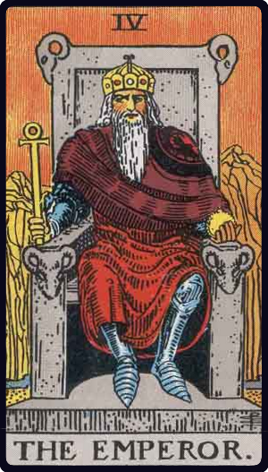

① 今回出たカード
- カード① ソードの5（逆位置）
- カード② カップの6（正位置）
- カード③ 審判（正位置）
- バックカード 皇帝（逆位置）
② カードが示すこと
まずソードの5逆位置は、争い・緊張・執着からの解放を意味します。
これまで心のどこかで抱えてきた「勝ち負け」「しなければならない」という感覚が、ゆっくりとほどけていく。
バンジーで「飛び込む」という行動が、その象徴だったのかもしれません。
カップの6正位置は、懐かしさと純粋さのカードです。
幼いころの自分、何も怖くなかった頃の感覚、あの頃の素直な気持ち——。
バンジーを飛んだことで、そういうものが戻ってきているのかもしれません。
「原点に戻る」という意味で読むことができます。
そして審判正位置。これは転換点のカードです。
何かを呼び起こす、目覚め、新しいステージへの移行。
タロットの中でも「ここが変わり目だ」とはっきり示すカードのひとつです。
カードはそう言っています——「あなたは今、変わろうとしている」と。
バックカードの皇帝逆位置も印象的です。
皇帝は支配・ルール・秩序を表すカード。その逆位置は、既存の枠やしがらみが弱まることを示します。
他人が決めたルールや、自分を縛っていた「こうあるべき」という感覚が、少しずつ手放されていく。
自分のペース・自分の基準で生きていく方向への転換です。
4枚をまとめると、
ソードの5逆＝これまでの緊張や執着が解ける
カップの6正＝純粋な自分に戻る
審判正＝ここが転換点
皇帝逆（バック）＝他人の枠から外れていく
変わります。もう変わりはじめています。
バンジーはその「きっかけ」というより、すでに起きていた変化に自分で気づいた瞬間だったのかもしれません。
③ それぞれのカードの意味



まとめ
「これから何か変わりますか？」という問いに、審判正位置はこう答えています——「もう変わりはじめている」。
ソードの5逆位置で緊張や執着がほどけ、カップの6正位置で純粋な自分が戻ってくる。
皇帝逆位置のバックカードは、他人が決めた枠組みから静かに外れていくサインです。
バンジーを飛んだことは、その変化の入り口だったのかもしれません。
あるいは、すでに始まっていた変化に自分で気づいた瞬間だったのかも。
どちらにしても、カードはそう言っています——「あなたはもう、動いている」。